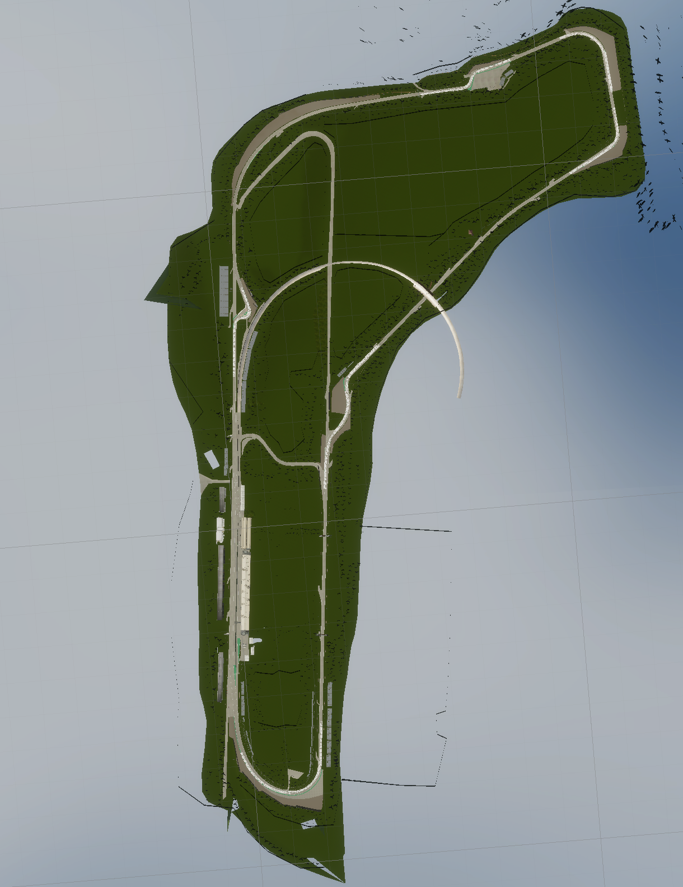
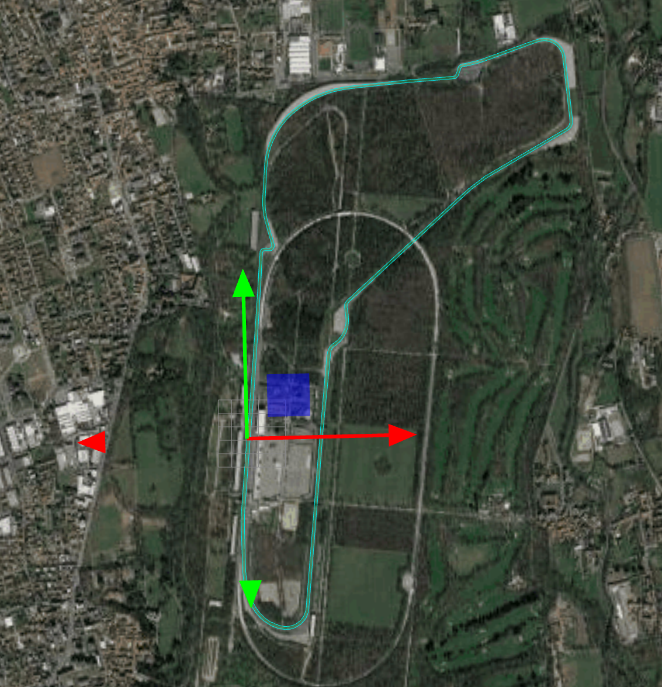
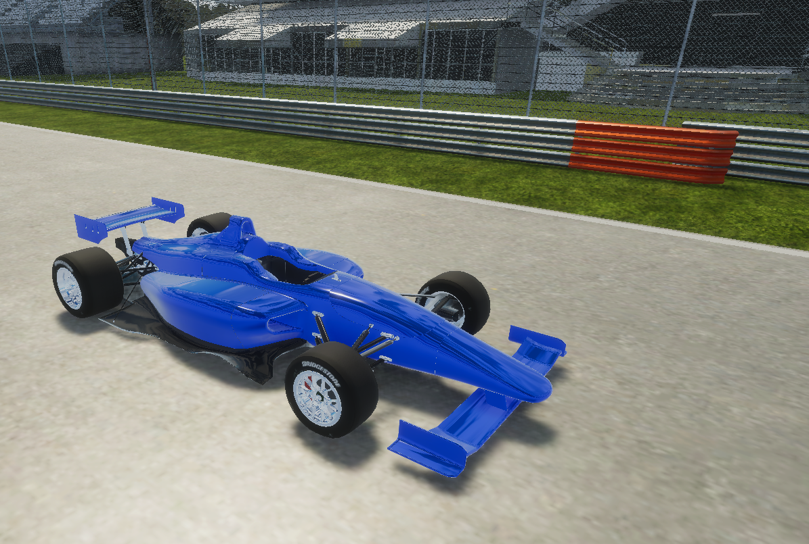
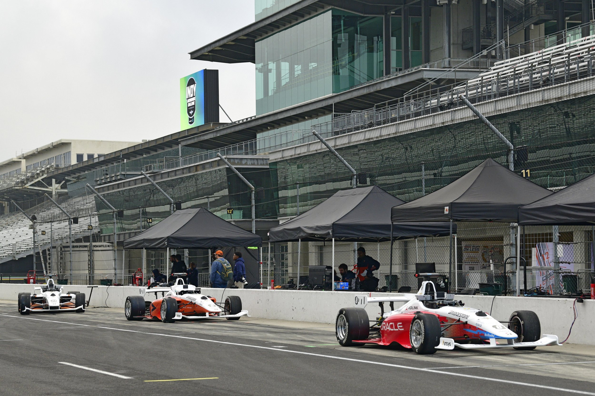
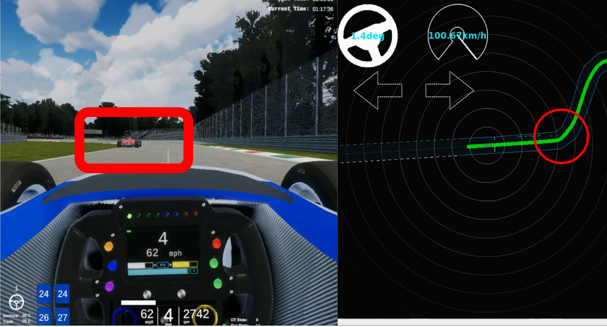
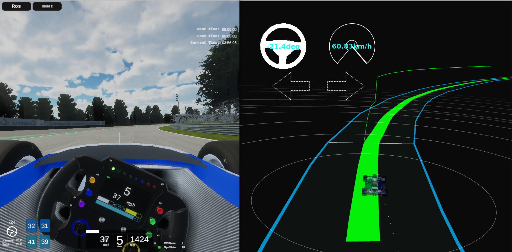

Japan Automotive AI Challenge 2023 (Simulation)
Competition Concept
As new technology fields called CASE become the center of competition in the automobile industry, there is a shortage of AI and IT engineers, and the need for them is rapidly increasing throughout the automobile industry.
As a new initiative to discover and develop engineers who will lead the automotive industry in the future, we will hold an international competition to compete for AI technology in autonomous driving.
We aim to build a framework that contributes to the further development of the automobile industry, starting from this competition, which is conducted through industry-government-academia cooperation.

Japan Automotive AI Challenge 2023 (Simulation) Goals
Motorsports, which test the driving performance of automobiles in extreme conditions, have contributed to the improvement and development of automobile performance by creating technical challenges. The 2023 Autonomous Driving AI Challenge (Simulation) is aimed at contributing to the development of autonomous driving technology that can safely and quickly operate in an end-to-end (E2E) simulation environment.
Autonomous driving in racing involves a variety of technical elements, such as control technology that takes into account lateral slip, air resistance, and vehicle response characteristics, as well as tracking and behavior prediction of other vehicles. This tournament provides participants with an opportunity to develop autonomous driving software with strategic driving planning and advanced vehicle control functions that incorporate these elements, and to share their knowledge. We expect that engineers who have acquired new technologies through this Challenge will contribute to technological innovation in the automotive industry.
Japan Automotive AI Challenge 2023 (Simulation) Summary
In this tournament, it is possible to run in the video mentioned above using the software that is distributed in advance. Using this software, please make improvements in line with the challenges described below.
Automated Driving Technology Competition and Special Awards
Participants will aim to win the race while safely driving with autonomous driving software based on Autoware.Universe. In addition, to promote the growth of the community of this tournament and to share knowledge that is useful for participants, the following special awards will be established. Please see the overview page for more details.
The Community Contribution Award, which honors those who have contributed to the OSS as volunteers or to the expansion of the community.
The Sponsor Award, which is voted on by platinum sponsors to encourage active initiatives through AIChallenge.

Driving Course and Rivals
|  |  |
|---|---|
| MonzaTrack at AWSIM | MonzaTrack at vector map |
The race course for this tournament will be the MonzaTrack. It is about 5.8 kilometers long and has a complex shape, including long straights and hairpin turns. Participants will race on this circuit-themed course along with multiple rival vehicles. As rival vehicles will accelerate, brake, and change course in response to your autonomous vehicle, strategic path planning is required.
Vehicle to be used
In this competition, we are using vehicles that will be used in the Indy Autonomous Challenge.
|  |  |
|---|---|
| simulation car | indy car |
The 3 Challenges
Challenge 1: Robust Perception
In the first challenge, participants are required to predict the future behavior of other vehicles based on the vehicle recognition data provided by the simulator. Autonomous vehicles require a high level of safety, and it is essential to detect and predict the movements of other vehicles that exist in the surrounding 360 degrees through sensor data in order to avoid collisions. In this competition, we provide accurate data (ground truth) as vehicle recognition information so that participants can focus on behavior prediction.
 |
 |
|---|---|
| sensing and perception | perception at simulation |
Specifically, the following points can be improved
- Other vehicle tracking: Participants use sensor data to track the location and movement of other vehicles. This process includes analyzing information from the sensors and accurately identifying vehicles in the vicinity.
- Behavior prediction: Based on the data from tracked vehicles, the future behavior is predicted. This prediction is essential for collision avoidance and the development of safe driving strategies.
Challenge 2: Strategic Route Planning
The second challenge is strategic path planning. In order to drive faster than other vehicles, it is necessary to process the constantly changing surrounding environment using the recognition results and always pursue the optimal route.
 |
|
|---|---|
| real environment planning | route planning |
Specifically, the following points can be improved
- Dynamic situation response: The situation during a race is constantly changing. It is required to respond to these factors quickly and effectively, such as how other cars move and how the road surface changes.
- Pursuit of the optimal route: In order to drive faster than other vehicles, it is necessary to find and pursue the optimal route based on this information. This includes things like how to take curves, the timing of acceleration and deceleration, and judging the chance of overtaking.
Challenge 3: Control in High-Speed Driving
The third challenge is the development of a control module that can handle high speeds and allow driving along strategic and complex routes. In order to win a race, it is essential to have control technology that can realize the optimal path planning. In this competition, accurate data (true values) are provided as self-localization results so that participants can focus on vehicle control.
 |
 |
|---|---|
| high speed control | high speed control at simulation |
Specifically, the following points can be improved
- High-speed control: During a race, especially when driving at high speeds of around 200 km/h, vehicle control, including gear shifting, is very important. Driving at high speeds is very different from driving at low speeds, so more precise control is required.
- Vehicle interface development: In this challenge, a specialized control module is required to be developed to enable driving at high speeds. This module must properly control the vehicle's accelerator, brake, and steering using a simulator that accurately simulates actual vehicle behavior.
Evaluation Criteria
This tournament aims to quickly and safely reach the goal. Therefore, the driving of the participants' autonomous driving software will be evaluated based on the following three aspects. For details on scoring and rules, please visit the rules page.
- Distance - Reach the goal of the course.
- Safety - Drive without collision or route deviation.
- Speed - Drive to the goal in a short time.
Development Environment
- Participants need to prepare a computer with Ubuntu 22.04 environment.
- Submit the developed repository, and scoring will be done in a cloud environment.
- Details of the competition repository and competition will be announced in early November.